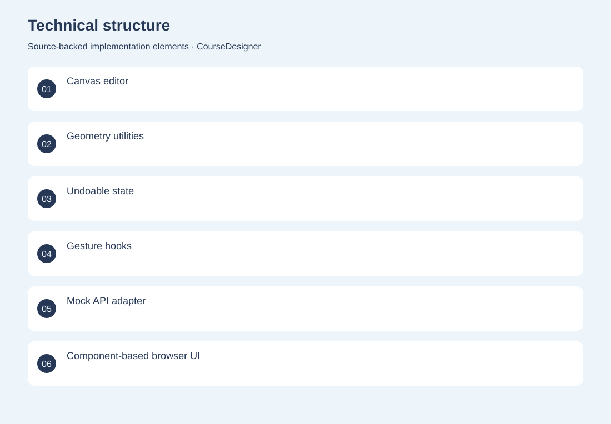
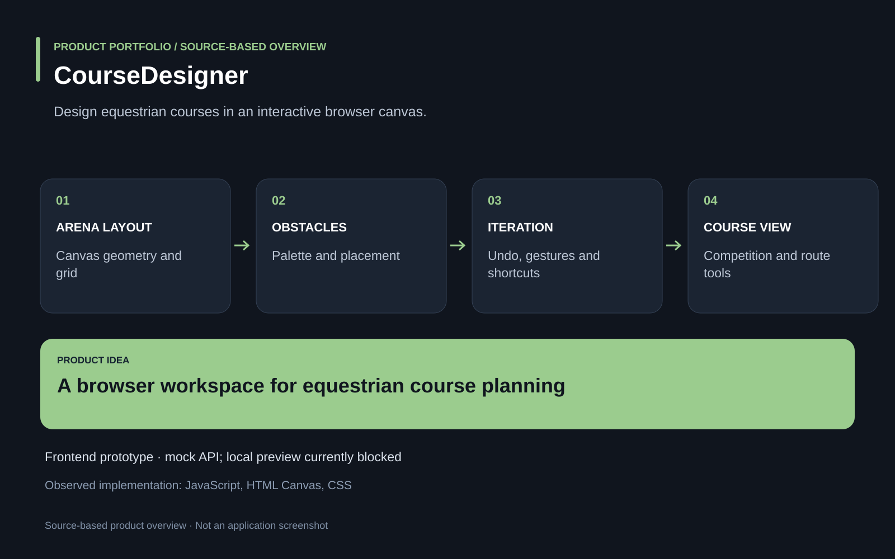

The project
Course designers need to place obstacles, adjust geometry and iterate on layouts without losing previous versions. A React/TypeScript canvas editor combines obstacle placement, geometry utilities, touch gestures, shortcuts and undoable interaction history. Developed the frontend planning experience, reusable canvas tools and state/history logic. Interactive frontend prototype. The inspected repository uses a fake API; cloud persistence and production authentication are not established.
The problem
Course designers need to place obstacles, adjust geometry and iterate on layouts without losing previous versions.
The solution
A React/TypeScript canvas editor combines obstacle placement, geometry utilities, touch gestures, shortcuts and undoable interaction history.
My contribution
Developed the frontend planning experience, reusable canvas tools and state/history logic.
Technical structure

Product overview

The portfolio cover is an editorial illustration. No live product screenshot is presented for this project.
Showcase assets
{kind=link}
{kind=link}
New portfolio identity. Newly designed marks are portfolio treatments, not claims of official client branding.